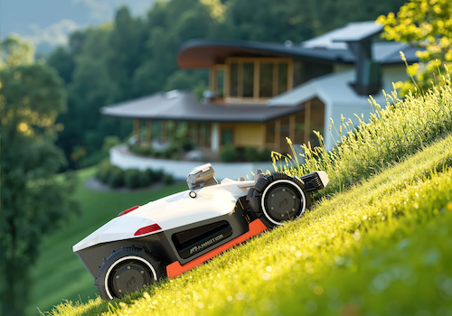

Your lawn, perfectly cut, without lifting a finger.
Start, pause, stop, or send it back to the dock. Adjustable blade height and cutting speed, and zone-aware "start mowing" that can target a specific named area.
Toggle the headlamp, side LED, and rain protection from a device tile or a Flow.
Battery level and charge cycles, blade wear, mowed area and progress, mowing speed, elapsed/remaining time, WiFi and Bluetooth signal strength, GPS satellite count, and RTK positioning accuracy.
Triggers for mowing started, docked, error, and low battery. Conditions for mowing state, battery level, and GPS signal. Actions covering every control above.
Connects over the cloud by default and switches to a direct Bluetooth connection automatically when your mower is in range — local control, cloud as the reliable fallback.
Update your Mammotion account credentials any time without deleting and re-pairing the device.
Other Yuka models use the same protocol family and are expected to work the same way — if you pair one successfully, please open an issue or post in the Homey Community topic to confirm it for others.
Pairing walks you through setting up a dedicated second Mammotion account before asking for login credentials — Mammotion's mobile app signs you out whenever another app authenticates with the same account, so using your primary daily-driver account isn't practical. You only do this once.